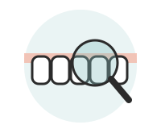
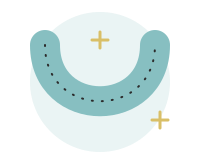
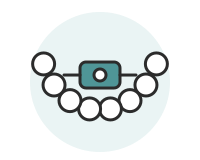
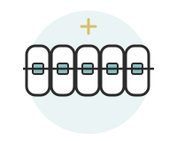

子どもの矯正
あごが成長している時期に歯並びやかみ合わせを整えることで、永久歯が生えるスペースを整え、将来の抜歯や本格的な矯正の負担を軽くできる場合があります。
お子さんのお口の状態や生活に合わせて方法を選びます。まずは無料相談で、気になっていることをお聞かせください。

保護者の方から、よく聞くお悩み
小児矯正を考えるとき、多くの保護者の方が同じところで迷われます。先にお答えしておきます。
費用はいくらかかる？
すべて自費診療で、金額は下の費用表のとおりです。プレオルソ・1期治療・2期治療をすべて受けた場合の目安も載せています。子どもの成長に必要な歯列矯正は、医療費控除の対象になる場合があります。
いつから始めればいい？
前歯の生え変わりが始まる6〜8歳ごろに、一度ご相談いただくのがおすすめです。すぐに始めたほうがよいか、様子を見てよいかは、お口の状態と成長によって変わります。
痛くない？
装置を使い始めたときや調整の後に、痛みや違和感が出ることがあります。多くは数日で慣れていきますが、気になるときはいつでもご連絡ください。
学校や習い事は？
プレオルソは、主に家にいる時間と寝ている間に使う装置です。取り外しができるので、学校や運動のときは外しておけます。ほかの装置の場合は、検査・診断のときにご説明します。
むし歯が心配
装置が入ると歯みがきがしにくくなります。矯正中も定期検診とクリーニングを続けます（保険診療。新居浜市では18歳の年度末まで窓口負担なし）。
本当に矯正が必要？
相談では、治療をする場合と、しばらく様子を見る場合の両方をお伝えします。当院は一般歯科なので、様子を見る間も定期検診でむし歯の予防・管理を続けながら、歯並びの変化を一緒に見ていけます。始めるかどうかは、ご家族で決めていただけます。
治療の選び方
方法は一つではありません。お子さんの状態に合わせて、次の中から一緒に考えます。当院は一般歯科なので、矯正をしない・まだ始めない場合も、むし歯の管理をしながら安心して通い続けていただけます。




| 方法 | どんな治療か | よいところ | 気をつけること |
|---|---|---|---|
| 様子を見る | 3〜4か月ごとの定期検診で、むし歯の予防・管理をしながら、生え変わりとあごの成長を確認します | 一般歯科として、むし歯の管理と歯並びの確認を同じ医院で続けられます。矯正の費用はかかりません（検診は保険診療） | 時期を過ぎると、選べる方法が少なくなることがあります |
| プレオルソ | やわらかいマウスピース型の装置を、家と寝ている間に使います | 取り外しができ、学校で使わずにすみます | 決められた時間使わないと、効果が出にくくなります |
| 1期治療 | あごの成長を利用して、歯が並ぶスペースを整えます | 将来の抜歯や2期治療の負担を軽くできる場合があります | 1期だけで終わらず、2期治療が必要になる場合があります |
| 2期治療 | 永久歯の歯並びをワイヤー装置で整えます | 一本一本の歯の位置まで整えられます | 歯みがきがしにくく、治療後は保定装置が必要です |
治療の流れ

- 相談（無料）気になっていることを伺い、矯正の進め方を大まかにご説明します。
- 検査・診断レントゲンや歯型、写真で分析し、治療方法・期間・費用をご説明します。
- プレオルソ（必要な場合）やわらかいマウスピース型の装置を、主に家にいる時間と寝ている間に使います。期間の目安は1〜2年、1〜2か月に1回通院します。
- 1期治療あごの成長を利用して、歯が並ぶスペースを整えます。期間の目安は2〜3年、1〜2か月に1回通院します。
- 観察期間・再診断永久歯が生えそろうまで3〜4か月に1回確認し、2期治療が必要かどうかを再診断します（無料）。
- 2期治療（必要な場合）永久歯の歯並びをワイヤー装置で整えます（目安2〜3年）。終了後は、後戻りを防ぐ保定期間（目安2〜3年）に入ります。
費用（すべて自費診療・税込）
| 項目 | 費用 |
|---|---|
| 相談 | 無料 |
| 検査・診断 | 16,500円 |
| プレオルソ | 88,000円 |
| 1期治療 プレオルソから移行する場合 | 385,000円 341,000円 |
| 2期治療 1期治療から移行する場合 | 770,000円 440,000円 |
| 再検査・再診断 | 無料 |
| 矯正調整料（毎月） 脱離などの急患時・保険診療でのメンテナンス時は0円 | 3,300円 |
費用は2026年10月時点のものです。今後変更になる場合があります。最新の費用は相談・検査の際にご確認ください。
記載の期間は目安です。お口の状態や成長、装置の使用状況によって異なります。検査・診断の際に詳しくご説明します。
すべて受けた場合の目安
検査・診断 16,500円 ＋ プレオルソ 88,000円 ＋ 1期治療 341,000円 ＋ 2期治療 440,000円 ＝ 885,500円（税込）
このほか、通院ごとの矯正調整料（月3,300円）がかかります。お子さんによっては、プレオルソだけ・1期治療までで終わる場合もあります。
矯正治療のリスク・副作用
- 装置を使い始めたときや調整の後に、痛みや違和感が出ることがあります
- 歯みがきがしにくくなり、むし歯や歯ぐきの炎症が起こりやすくなります
- プレオルソなど取り外しのできる装置は、決められた時間使わないと効果が出にくくなります
- 1期治療だけで終わらず、2期治療が必要になる場合があります
- 歯の根が短くなる、歯ぐきが下がることがあります
- 治療後に保定装置を使わないと、歯並びが戻ることがあります
- 成長の仕方によっては、予定していた治療期間や方法が変わることがあります
治療内容・費用・リスクについてのお問い合わせは、いんなみ森田歯科（0897-37-6480）までお気軽にどうぞ。